I am Good at Playing Poor
Madam Jia, the owner’s wife, asked me if I wanted breakfast.
I still have a bunch of dough twist so I declined her offer.
After all I still bought 4 sesame pancakes which cost 5 cents each. I ate one for breakfast it was as hard as a brick.
One must have very good teeth to eat it. The rest I will keep it for provision.
My stomach complained once I finished the pancake.
It protested why I had to eat such thing so difficult to digest.
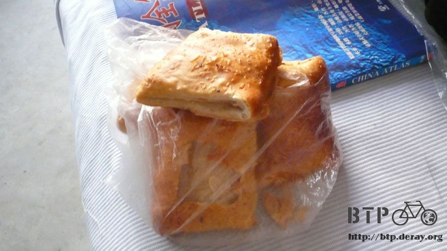
It’s about 90Km far to Xingtai now is six thirty; I believe I will get there at noon for lunch.
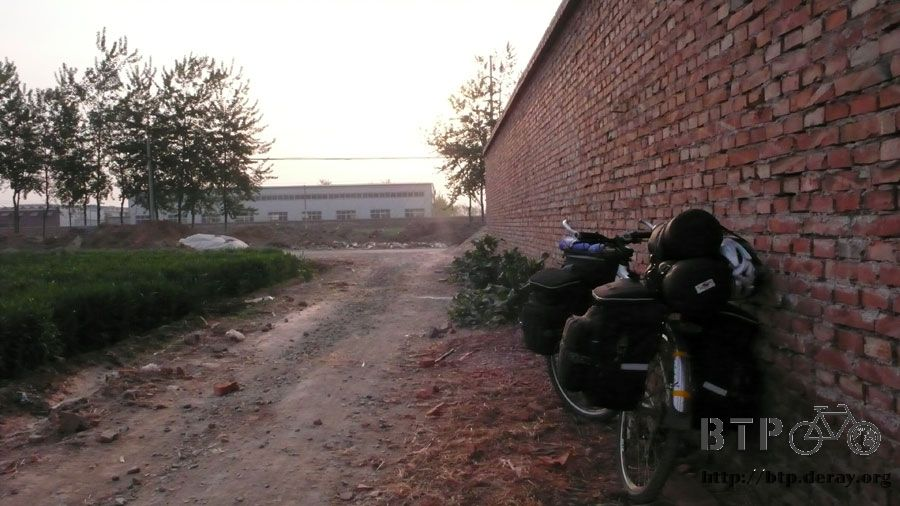
I am still taking the 107 freeway. There are trees full of branches and leaves planted along the way for about 30Km.
It was very refreshing to ride on this section.

I cover myself as much as I can on this journey since I don’t want to become a charcoal like other trips.
I wear my long sleeve dry tex shirt and a jacket to cover myself from the sun.
I was wearing shorts but my legs are getting dark already so I started to wear the long black lycra pants underneath.
Therefore I am totally covered.
The only place I am exposed to the mercy of sun is my face and my fingers outside of my gloves.
Nothing special happened on the way, so I rode and listened to music.
I arrived at Xingtai according to my plan at twelve.
I feel that this is a nice place even though I was only passing by. I liked the place.
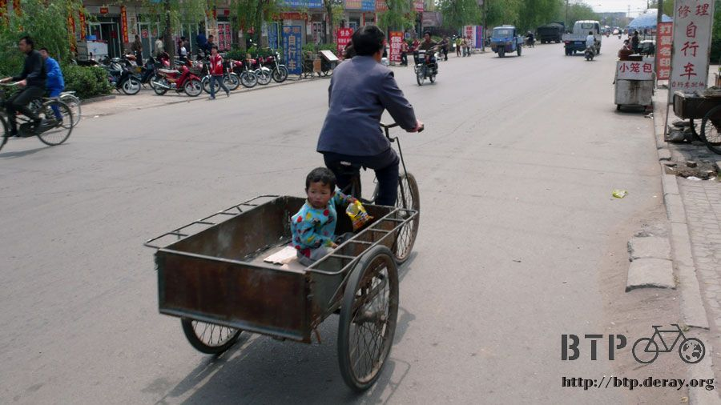
I chose a buffet stand along the way. I could choose from a variety of 20 hot and cold dishes.
I took a serving of braised pork and rice.
The owner told me that the pork cost 7 bucks so I shouted in an exaggerated voice “it cost 7 bucks!!”
Immediately I got a discount even though I didn’t feel it was expensive.
So I spent 7.5 bucks for the pork and the rice.
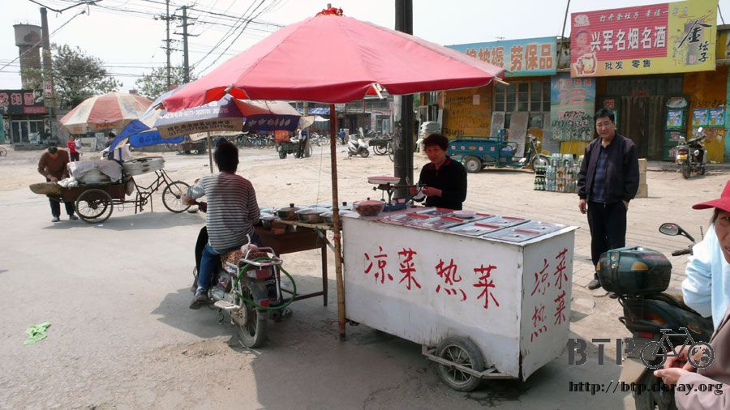
I took a share table between the buffet stand and the cold noodle stand.
I chat with the owner for a little and people started to gather around.
Those who were eating and other salesman, they all gathered around to ask me about the journey and touch Dido.
They were very enthusiastic but I started to get nervous about their enthusiasm.
I remained calm and finished this delicious food.
Once I finished I thanked them all and went on my way to avoid the crowd.
I also bought a stick of pineapple for dessert.
I kept riding and I saw an internet cafe’s sign just when I was about to leave Xingtai.
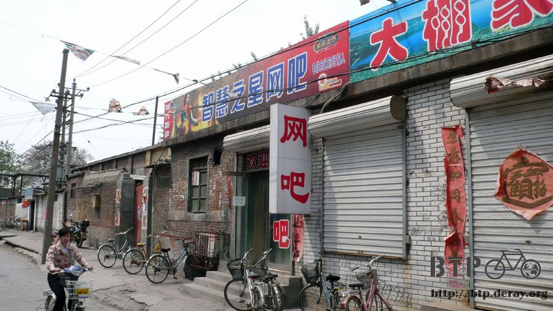
This is the first internet cafe that I see in China.
Finally I can get online so I entered and asked: “I have my laptop, can I use your connection?”
The clerk shook his head. I didn’t know if he meant can’t or don’t know.
“I have a portable hard disk can I connect it to your computer?”
The clerk shook his head again. I still didn’t know what he meant.
I guess I will just try and find out. One hour of internet cost 2 bucks,
I don’t know if that’s expensive or not at least I can afford it.
So I took my bike into the internet cafe fearing that when I am concentrated on the computer someone might come and take it.
The pancakes from this morning fall off when I was taking out my laptop.
The clerk heard the dropping sound and asked me: “You only eat this for your journey?”
That’s great!! I succeeded to give people a poor impression!
That’s a very strong encouragement.
“Yes I have to ride for a few months so I have to save the money.If not I won’t have enough for the journey.”
So I proceeded to detect wireless internet.
Of course they won’t have that here. No success.
Then I tried to connect the ADSL cable to my laptop. Failed, because the cable was too short.
Then let me just copy my blog to the external hard disk and then connect the hard disk to their computer.
Failed too, because their computer doesn’t recognize my external hard disk.
I thought with my three strategies I wouldn’t fail to upload the blog but seems like I am wrong.
I guess it’s because my external hard disk was not receiving enough power to be recognized.
As last resource, I remembered that I have iPod.
I just use iPod as a memory device and copied all my blogs to iPod and then to the computer.
Finally successful.
Finally I can upload my blogs for the last five days.
At the same time reported my well being to my family, Misasa and my friends.
And I can share the events with everybody and let you all see the world through my eyes.
Too bad that the computer only had simplified Chinese input program.
I only could read the Emails and messages but I couldn’t type traditional Chinese.
I hid myself from the sun in the internet cafe for about an hour.
The uploading speed was pretty fast, 40 or so MB, so I only spent 10 minutes uploading.
I will have daily blogs however I don’t think I can upload daily. Once a week will be fine.
China is a place with a lot of bike riders.
Among this people there are about 15~20% with electrical bike (estimated by sight).
It is also a very good substitute for motorcycles.
It is quiet and easy to ride. Above all it’s very pro environment.
Bicycles in advanced countries such as Europe, is a trend but in developing countries such as China it represents life.
What about in Taiwan? It actually is a test. Who would really like to fight with a bunch of cars and motorcycles for road?
If you don’t have a strong heart you really can’t commute with a bicycle in a big city (Taipei).
When I was riding today, I spent a lot of time day dreaming.
I only allowed a little portion of my brain to watch the uneven road and avoid the gravels.
My butt hurt so much that I almost lost my feelings.
I am about to go into “bum of steel” state.
It’s very usual to ride into a road that is excavated exaggeratedly, so I have to walk through.
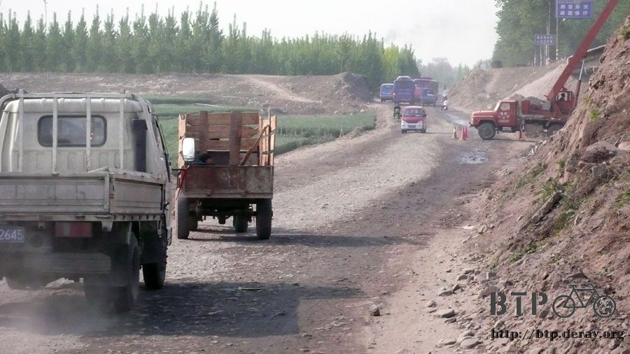
I saw a donkey pulling a cart with vegetables on my way.
When the boss was gone the donkey started to eat the vegetables that it was carrying.
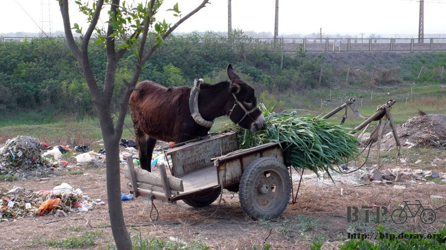
Around five o’clock I arrive at Handan, the background city for the movie “The Battle of Wits”.
In which described how the Mohist Gerlit protected the people of Liang by protecting the city’s castle.
However there’s no sign of a castle in this city anymore. Generally speaking, this is a modern city that will attract most peoples.
It’s larger than I imagined. The modern part of the city is very fashioned and tidy that makes you feel you are not in China.
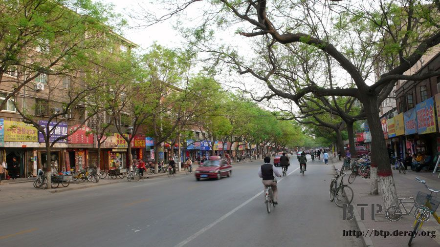
The old part of the city remains very traditional.
It seems like time didn’t leave its trail on this part of the city.
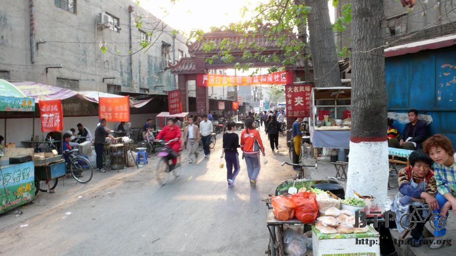
I rode around and around. I am amazed for the variety of facets in China.
I won’t have opportunity on this journey to go to the cities along the coast.
I believe their lives must be even more vivid and interesting.
Along the way I saw a beverage store, something very rare in China, adding to that it sells Bubble Tea.
Since Bubble Tea is originated from Taiwan so it announces that it’s Taiwanese Bubble Tea.
Even the brand resembles a Taiwanese bubble tea chain store “Quickly”.
It is so funny. A glass about 300cc of bubble tea cost 1 buck.
This is the first time I complain about the quantity of things I buy in China. Fortunately it is not a big glass.
It doesn’t taste a bit like bubble tea. It tastes more like almond juice with caramel.
It is not bad if you don’t call it a bubble tea.
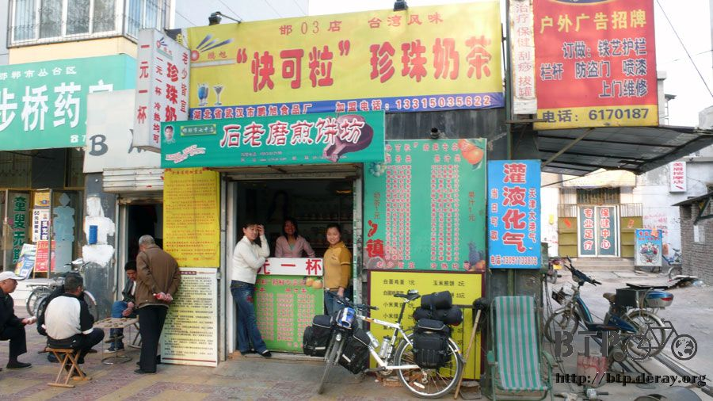
From the clerks I got information that a little street ahead is full of cheap dorms.
Just like they told me, one by one lined up with signs outside.
You can compare the prices until you find the one that suits you.
I decided to stay the night on the one that has a grocery shop outside.
It costs 15 bucks. Other dorms wanted to charge me 30 because they said that it’s a double room.
Hey, but it is you who doesn’t offer single room, I am only one person.
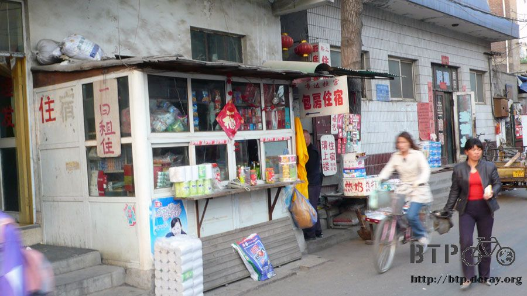
The grocery shop’s room is a quadruple equipped with some nice stuff such as television for me to enjoy some voices.
I organized my stuffs and washed my jacket that is getting dirtier every day and then I went out for food hunting.
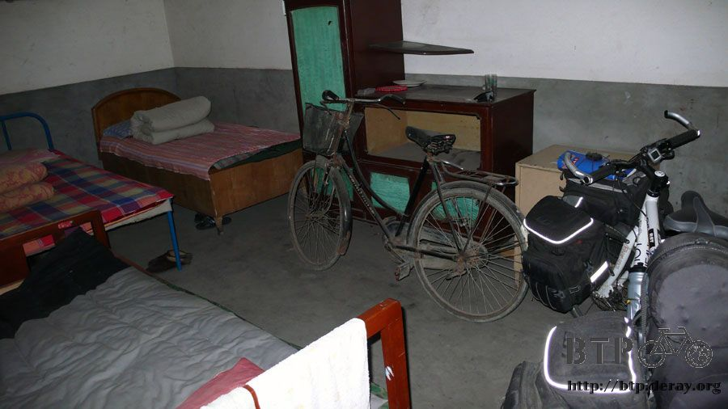
I chose a restaurant that looked nice. Besides me, there were a bunch of students eating.
I ordered one fried rice or chao fan (2.5 bucks) and a Tofu spicy sour soup (5 bucks).
I took a lot of napkins after I ate. I didn’t bring tissue papers this time so everyday when I stopped at a place I will take some.
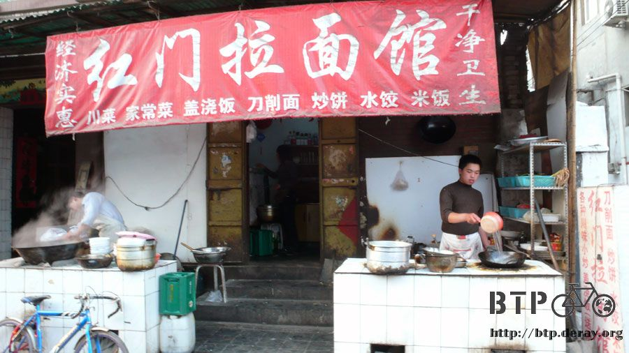
After dinner I walked around to digest my food. Nobody laid eyes on me since I was dressed raggedly.
When I rode my bike everybody looked at me like an alien.
I take out my sunglasses, my babushka and I only wear my shorts and the slippers after I ride.
My dress code looked poorer than anyone else walking around and that helped me to avoid peculiar sights.
Now I am waking up earlier and departing earlier. As consequences I am able to find a place to stay earlier.
I am doing well at my time management. However since I am waking up earlier I feel sleepy after nine.
So sleep I go zzZZz.